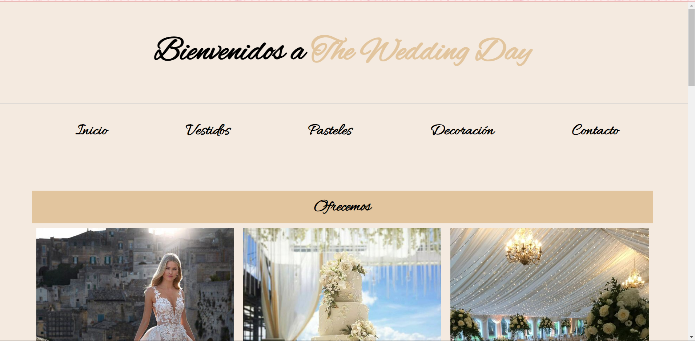
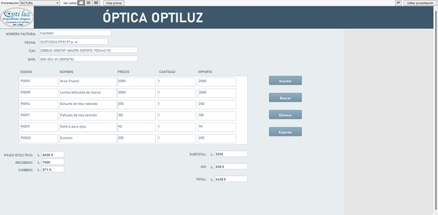

Mis Proyectos

Sistema de Registro
Sistema innovador para la gestión digital de registros en una óptica.
Leer más...

Página Web de Bodas
Diseño moderno y elegante para bodas, con detalles personalizados.
Leer más...

Sistema de Registro en FileMaker
Diseñado para optimizar y gestionar eficientemente las operaciones de una óptica.
Ver Proyecto